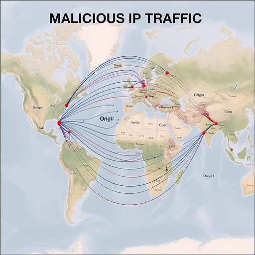

Defend your organization. Operate with confidence.
Cyber Bastion combines cybersecurity expertise, security operations, and intelligent IT management to help organizations protect, manage, and respond across their technology environment.
Reduce exposure and strengthen your security posture.
Turn security signals into actionable intelligence.
Move quickly from incident to containment and recovery.
Manage the technology estate with Bhudi RMM.
CYBERSECURITY SERVICES
Security expertise for the threats that matter.
From prevention and detection to response and recovery, Cyber Bastion helps organizations build a stronger security foundation.
Managed Detection & Response
Security monitoring, threat hunting, triage, and response supported by experienced security operations.
Explore serviceVulnerability Management
Identify, prioritize, and remediate weaknesses before attackers can turn them into incidents.
Explore servicePenetration Testing
Adversary-focused testing that exposes weaknesses across applications, infrastructure, networks, and people.
Explore serviceIncident Response
Containment, investigation, remediation, and recovery when your organization is under attack.
Explore serviceCloud & Network Security
Secure modern infrastructure, connectivity, identity, and cloud workloads against evolving threats.
Explore serviceRisk & Compliance
Translate security requirements into practical controls aligned with recognized frameworks and obligations.
Explore serviceCYBER BASTION'S FLAGSHIP PRODUCT
Meet Bhudi — intelligent IT operations.
Bhudi is Cyber Bastion's Remote Monitoring and Management platform. It gives IT teams and MSPs one operational workspace to monitor devices, manage endpoints, automate maintenance, support users, and keep technology environments running.
Critical4
Warning14
Patch ready86
THREAT INTELLIGENCE
See the threat landscape. Act on what matters.
Cyber Bastion turns threat intelligence into practical security decisions, helping teams understand emerging threats and focus attention where risk is highest.

START WITH CYBER BASTION
Build a stronger security and operations foundation.
Talk to our team about cybersecurity services, managed security, or the Bhudi RMM platform.